Gallery
Dwarf galaxies in Merian
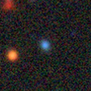
log M* = 7.52
zphot = 0.094

log M* = 7.63
zphot = 0.080

log M* = 7.67
zphot = 0.074

log M* = 7.69
zphot = 0.092
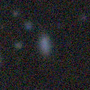
log M* = 7.73
zphot = 0.073
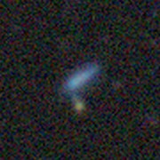
log M* = 7.92
zphot = 0.085
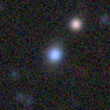
log M* = 8.05
zphot = 0.082
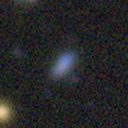
log M* = 8.06
zphot = 0.083

log M* = 8.23
zphot = 0.060
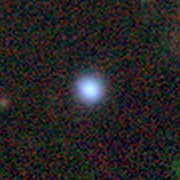
log M* = 8.43
zphot = 0.093
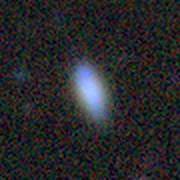
log M* = 8.44
zphot = 0.072

log M* = 8.46
zphot = 0.085

log M* = 8.51
zphot = 0.069
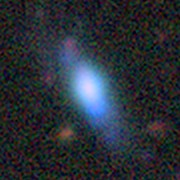
log M* = 8.53
zphot = 0.061

log M* = 8.64
zphot = 0.092
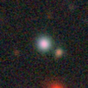
log M* = 8.72
zphot = 0.078

log M* = 8.97
zphot = 0.091

log M* = 8.98
zphot = 0.089

log M* = 9.03
zphot = 0.070
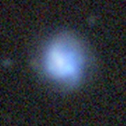
log M* = 9.17
zphot = 0.092
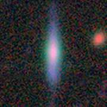
log M* = 9.22
zphot = 0.079
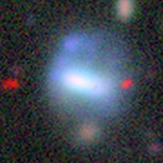
log M* = 9.31
zphot = 0.069

log M* = 9.37
zphot = 0.075
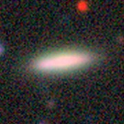
log M* = 9.51
zphot = 0.067

log M* = 9.59
zphot = 0.083
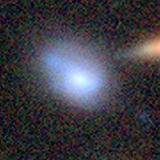
log M* = 9.61
zphot = 0.081

log M* = 9.77
zphot = 0.075
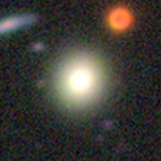
log M* = 9.83
zphot = 0.073

log M* = 9.96
zphot = 0.074
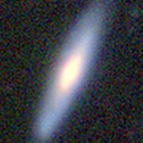
log M* = 10.00
zphot = 0.069